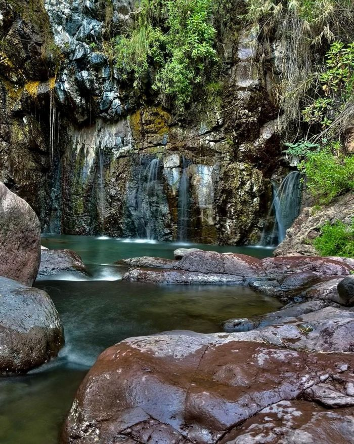

LUGARES TURISTICOS
Plaza Principal de Cuquio lugar donde pues estar con tu familia y amigos alrededor de la plaza pues compar y disfrutar de las ricas comidas y antojitos que la gente ofrece.

RIO VERDE (Agua Termales), lugar donde pues pasarun dia ageadable con familia y amigos a solo 30 min del pueblo.

Volver a la Página Principal